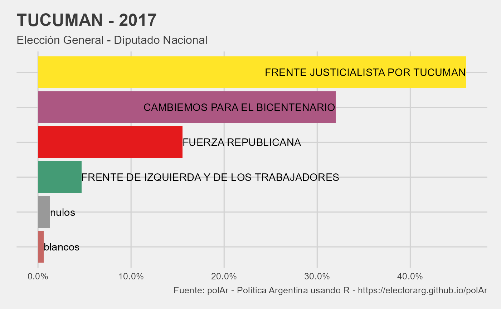

plot_results.RdFunción para graficar resultados de la elección (Function to plot election results)
plot_results(data, national = FALSE)
| data | un tibble guardado como objeto en el Enviroment luego de consultar |
|---|---|
| national | un boleano opcional para graficar elecciones presidenciales sin desagregar (an optional boolean to plot presidential elections without disaggregating). |
Devuelve un objeto de class"gg" "ggplot" que grafica el resultado de una eleccion condicional al nivel de agregacion de data
(Returns an object of class "gg" "ggplot" that plots the election results conditional on the level of data aggregation.).
REQUISITOS:
1. El formato de data debe ser long para poder graficar. Si data es wide se puede
transformar con make_long
(long format of data is required for plotting results. If data is in wide format you can transform
it with make_long)
2. data tiene que haber incorporando los nombres de las listas. Agreguelos con get_names
(data must have party names. Add them with get_names)
3. data tiene que haber sido descargada con parametro level = provincia con la funcion get_election_data
(data must have level = provincia wen downloading it with get_election_data)
#> # A tibble: 6 x 8 #> # Groups: codprov [1] #> category round year codprov name_prov electores listas votos #> <chr> <chr> <dbl> <chr> <chr> <dbl> <chr> <dbl> #> 1 dip gral 2017 23 TUCUMAN 1217274 0180 154930 #> 2 dip gral 2017 23 TUCUMAN 1217274 0503 46609 #> 3 dip gral 2017 23 TUCUMAN 1217274 0521 319221 #> 4 dip gral 2017 23 TUCUMAN 1217274 0548 459257 #> 5 dip gral 2017 23 TUCUMAN 1217274 blancos 5920 #> 6 dip gral 2017 23 TUCUMAN 1217274 nulos 12947